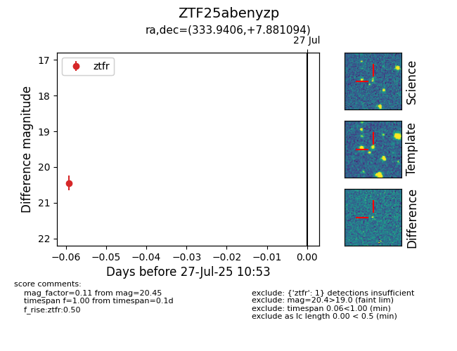

Target ZTF25abenyzp at 2025-07-27 10:53, see:
FINK: fink-portal.org/ZTF25abenyzp
Lasair: lasair-ztf.lsst.ac.uk/objects/ZTF25abenyzp
ALeRCE: alerce.online/object/ZTF25abenyzp
alt names
ZTF25abenyzp (ztf,fink)
coordinates:
equatorial (ra, dec) = (333.9406,+7.88109)
galactic (l, b) = (70.1969,-38.56333)
photometry
last ztfr=20.45
1 ztfr detections
